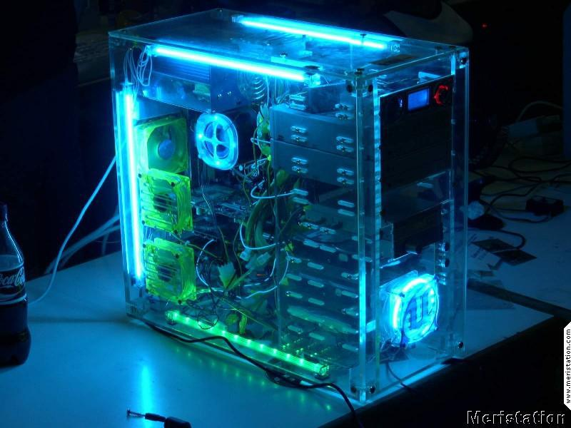

¿Que es el Modding?
Nuestro objetico es compartir los secretos del mundo del modding, para que mas gente lo conozca y pueda acceder a él. asi mismo compilamos mucha informacion del medio para que aquellos que ya lo conocieran se mantengan informados. El modding, concepto derivado de la palabra inglesa modify (modificar), es el arte o técnica de modificar estética o funcionalmente partes de un ordenador, ya sea la caja, ratón, teclado o monitor, pero también otros dispositivos relacionados como pueden ser las consolas.